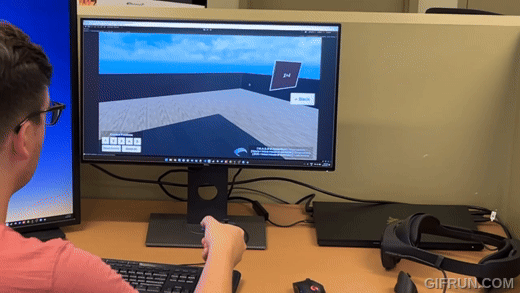
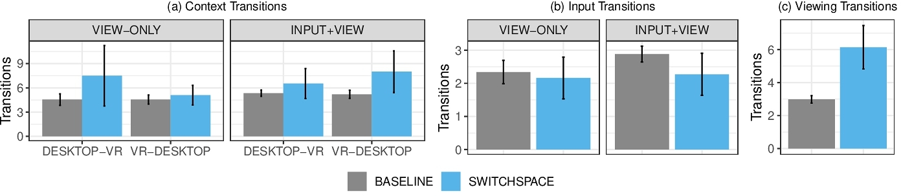

Key Takeaways
- Cross-reality work like 3D modelling or VR prototyping involves quick, temporary switches between VR and desktop, which can be cumbersome.
- Breaking down these switches by separating input and viewing devices enables more design opportunities.
- UI can make use of context like seated/standing, input devices, or viewing devices, to dynamically enable input/output techniques.
- Designing techniques to quickly and temporarily peek between interfaces, without needing to switch hardware, can make cross-reality workflows faster, more accurate, and more comfortable.
Abstract
Cross-reality tasks, like creating or consuming virtual reality (VR) content, often involve inconvenient or distracting switches between desktop and VR. An initial formative study explores cross-reality switching habits, finding most switches are momentary “peeks” between interfaces, with specific habits determined by current context. The results inform a design space for context-aware “peeking” techniques that allow users to view or interact with desktop from VR, and vice versa, without fully switching. We implemented a set of peeking techniques and evaluated them in two levels of a cross-reality task: one requiring only viewing, and another requiring input and viewing. Peeking techniques made task completion faster, with increased input accuracy and reduced perceived workload.
Formative Study and Design Space
We conducted a formative study to understand how people switch between VR and desktop interfaces. We found that most switches are momentary "peeks" between interfaces, with specific habits determined by current context.
Context, in our case, describes the user's current situation across three factors:
- Input devices: the devices used to interact with the system, such as a keyboard, mouse, or game controller.
- Viewing devices: the devices used to view the system, such as a VR headset or a desktop monitor.
- Memory: What were they doing before? What are they likely to do next?
Techniques
We implemented several peeking techniques within this design space, including:
Simulated HMD View: A window into the desktop, shown in VR. Users can see their desktop while in VR, and interact with it using their VR controllers.
Mouse in VR: The user can use the mouse in VR like a VR controller, with a 3D cursor locked to the headset.
VR Controllers on Desktop : The user can use the VR controllers on desktop to pan the simulated HMD camera and point into the scene.
Controller-Mouse: Turn the controller to the side and place on the desk. Sliding the controller around the desk controls the mouse cursor.
Desktop View (wrist): In VR, turn the controller like you're checking your watch to see a view of the desktop monitor.
Experiment
We recruited 16 participants to complete an experiment where they had to solve simple math problems. The two halves of the math problem were split between VR and desktop, and participants had to use a peeking technique or fully switch to solve the problem.Conditions
View-only: Some of the math problems only needed the user to switch viewing devices, without an accompanying change in input devices.
Input + View: Some of the math problems required doing a "slide to unlock" gesture before seeing the rest of the problem, to enforce switches in both input and viewing devices.
Task Positions: The desktop portion of the problem always took place on the desktop monitor, but the VR portion was placed at four possible positions: Desk (aligned with the real monitor), Back (3m behind the desk), Side (2m to the right of the desk), and High (1m above the desk).
Results
The ability to use these peeking techniques made solving the problem faster and more accurate than when users were forced to fully switch. The ability to use peeking techniques resulted in significantly fewer hardware transitions.  The ability to use peeking techniques resulted in significantly reduced perceived workload (as reported by participants completing the NASA-TLX questionnaire). The ability to use peeking techniques resulted in users removing the headset significantly less.What Can We Learn?
- Minimize hardware changes: Shuffling hardware around is the biggest factor in what makes cross-reality workflows cumbersome. Designing techniques to minimize those issues can make these workflows far faster and more comfortable.
- Design for Phsyical Space: A big factor in our experiment was where the task was placed in VR, which also impacted our results. Peeking techniques that minimize real-world movement can make tasks faster, especially in more constrained real-world environments.
Contact Us
Questions? Feel free to contact:
- Johann Wentzel (PhD candidate, University of Waterloo)
jdwentze [at] uwaterloo.ca - Fraser Anderson (Autodesk Research)
fraser.anderson [at] autodesk.com - George Fitzmaurice (Autodesk Research)
george.fitzmaurice [at] microsoft.com - Tovi Grossman (University of Toronto)
tovi [at] dgp.toronto.edu - Daniel Vogel (University of Waterloo)
dvogel [at] uwaterloo.ca